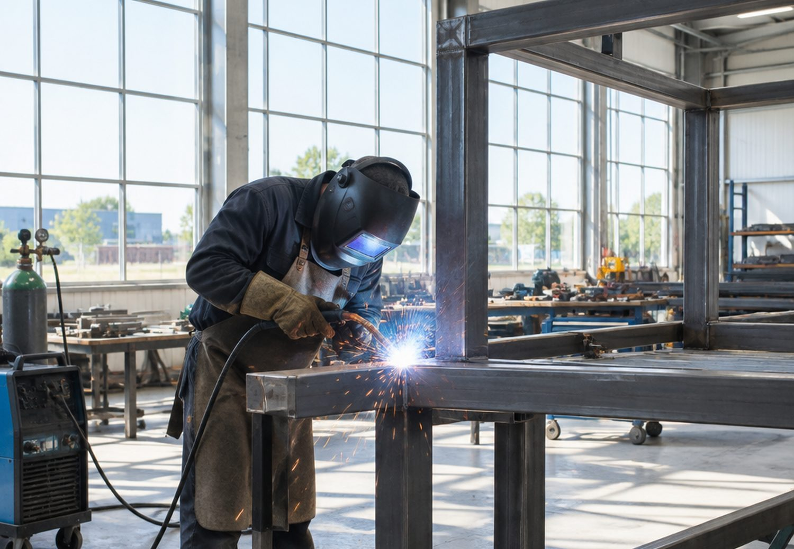
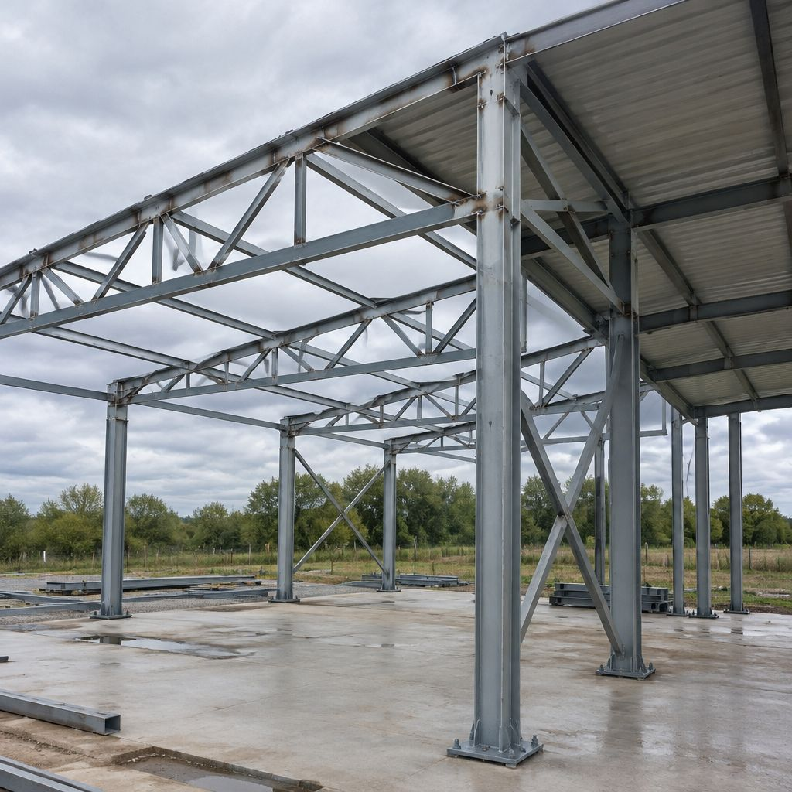
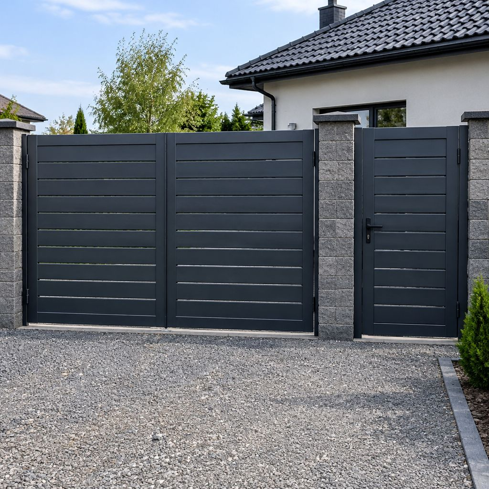
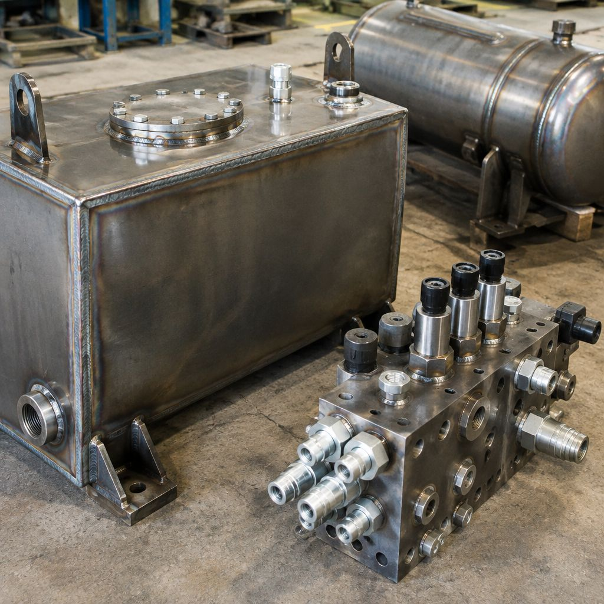
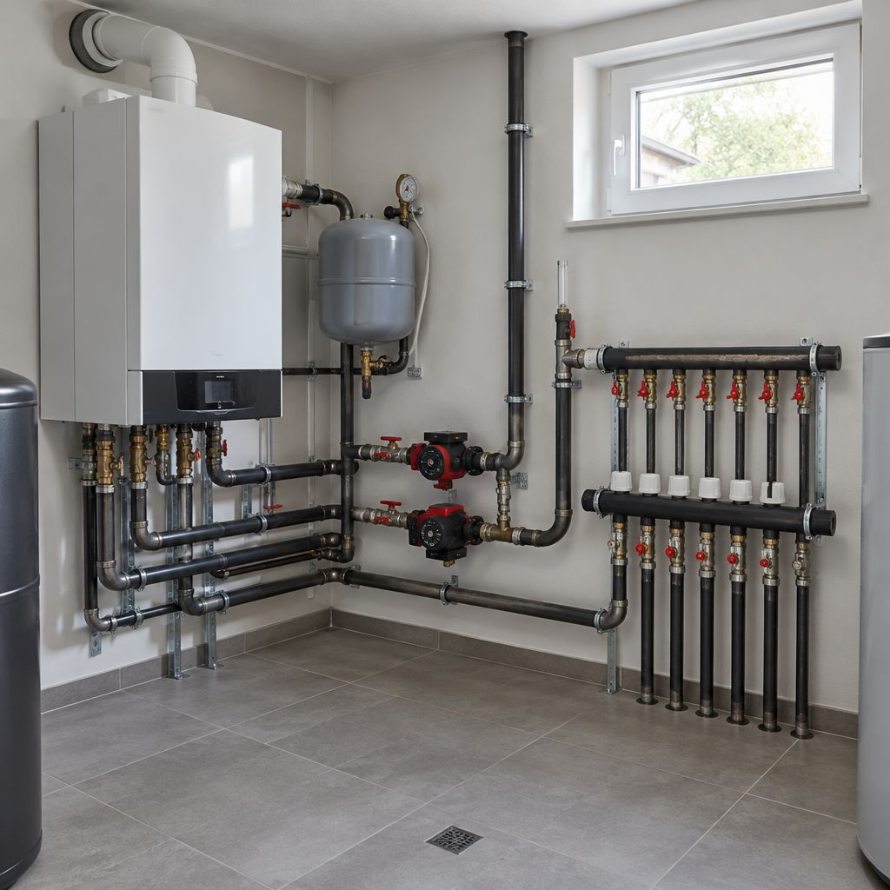
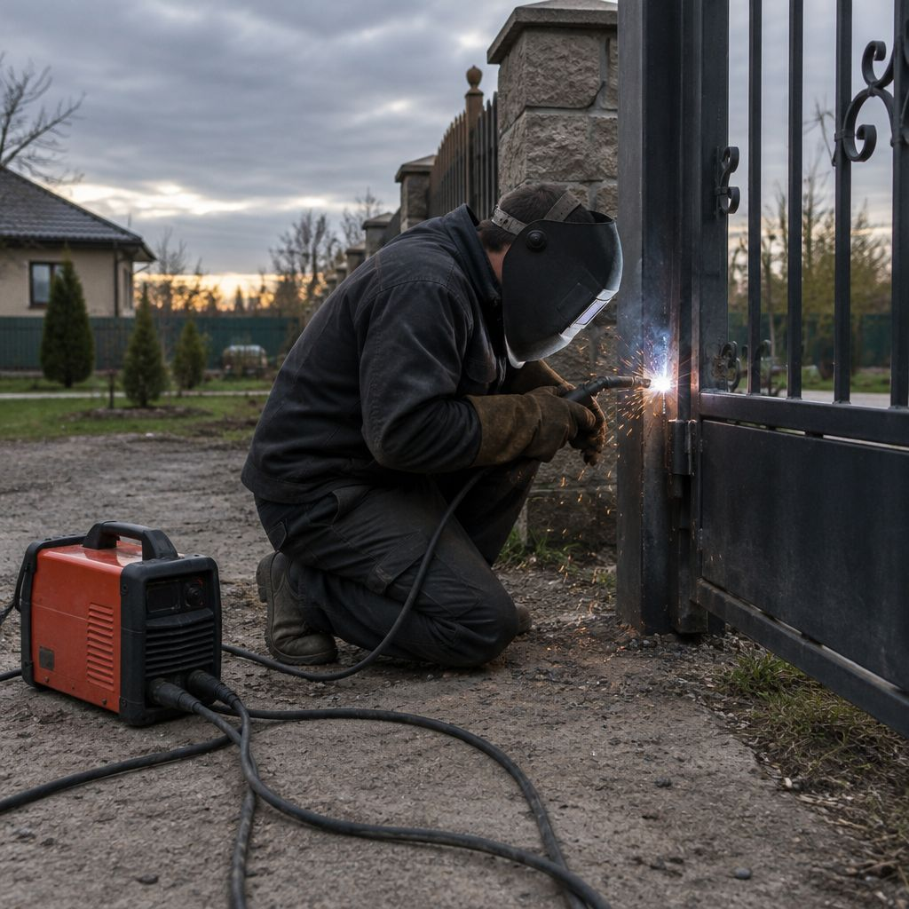

Сварка
любого металла
и отопление
Чёрная сталь, нержавейка, алюминий, чугун и медь. MMA, MIG/MAG, TIG и газ МАФ. Выездной сварщик, металлоконструкции, обвязка котлов и реконструкция разводки.
Чем варим
Четыре способа
под разный металл
Не «варим всё подряд», а выбираем способ под металл и толщину. Электроды и проволоку подбираем под конкретную сталь, а не «что было в цеху».
MMA
ручная дуговая
Электрод и держак. Берём, когда нужно варить на улице, в ветер и по месту, где нет газа: забор, ворота, каркас, ремонт металла.
- Электроды
- УОНИ-13/55, АНО-21, ЦЛ-11 для нержавейки
- Ток
- 60–230 А, обратная полярность
MIG / MAG
полуавтомат
Проволока в среде защитного газа. Основной способ для металлоконструкций и толщин от 2 мм: быстрее и чище, чем электрод.
- Проволока
- ER70S-6, ER308LSi, ER5356 Ø0,8–1,2
- Газ
- CO₂ или смесь 82/18, 10–16 л/мин
TIG
аргон
Вольфрамовый электрод и присадка в руке. Нержавейка, алюминий, медь, тонкий металл и трубы, где важен аккуратный шов.
- Присадка
- ER308L, ER5356, ERCu Ø1,6–3,0
- Газ
- Аргон 8–18 л/мин, поддув для труб
Газ МАФ
пайка и сварка
Ацетилен-заменитель МАФ. Чугун, медь, латунь, пайка тонкостенных труб и ремонт деталей, где дуга недопустима.
- Припой
- Cu-P, латунный, чугунный пруток с флюсом
- Пламя
- Нейтральное или восстановительное
Что чем варим
Металл и способ
Матрица для быстрой проверки: где способ работает, где с оговоркой, а где мы скажем «так не надо».
| MMA | MIG / MAG | TIG (аргон) | Газ МАФ | |
|---|---|---|---|---|
| Чёрная сталь | да | да | да | да, с флюсом |
| Нержавейка | да, ЦЛ-11 | да, ER308LSi | да, лучший шов | пайка, не сварка |
| Алюминий | нет | да, импульс | да, AC | нет |
| Чугун | да, ЦЧ-4 | с оговоркой | нет | да, МАФ |
| Медь и латунь | нет | с оговоркой | да | да, пайка |
Чёрная сталь
Нержавейка
Алюминий
Чугун
Медь и латунь
Карта режима
Подберите режим
до звонка
Выберите металл и толщину — покажу способ, ток, полярность и присадку. Так разговор начинается с дела, а не с «а сколько стоит».
Металл
Толщина
Где варим
Подбор ориентировочный: марка металла и разделка кромок меняют режим. Перед ответственной конструкцией варим образец и проверяем шов.
Изделия
Что выходит
из цеха




Отопление
Котёл поменяли,
а обвязка старая
Варим и монтируем сталь, работаем с полипропиленом, помогаем владельцам домов, организациям и монтажным бригадам. Разработаем проект на отопление.
Новый котёл не подходит к старой обвязке
Перевариваем трубы и меняем подключения под новый котёл, сохраняя остальную систему.
Котёл нужно демонтировать, заменить или перенести
Демонтаж, переделка трубной части, новый участок и подключение.
Радиатор ставим на другое место
Переносим с подводкой, при необходимости меняем радиатор.
Разводка мешает ремонту
Переделываем участок так, чтобы он не мешал и не терял в гидравлике.
Нужны новые участки отопления
Монтируем и соединяем с действующей системой, врезка без остановки на сутки.
Вашему монтажнику нужен сварщик
Выходим на объект к вашей бригаде: сварка стальных труб, узлы, регистры.
Выезд
Срочный ремонт
металла на месте
Ворота сорвались с петель, лопнула рама, отвалился козырёк — приезжаем со своим оборудованием и варим по месту.
Звонок и фото
Опишите, что случилось, и пришлите фото в WhatsApp. По снимку часто уже понятно, что нужно.
Что берём
Сварочный аппарат, генератор, газ, инструмент, металл для усиления. Свой транспорт.
Работа на месте
Варим аккуратно: у дома застелем и защитим поверхности, где есть риск брызг.
Проверка
Проверяем, что ворота ходят, конструкция не играет, шов проварен и зачищен.
О нас
Сварщики
с опытом 30 лет
Компания работает больше 10 лет, сварщики — с опытом около 30. Свои инструменты, оборудование и транспорт, поэтому не зависим от чужого цеха и не тянем сроки. Помогаем владельцам домов, организациям и монтажным бригадам. Изделия отправляем с доставкой по всей Беларуси.

Вопросы
Коротко
о главном
Сколько стоит сварка?
Зависит от металла, толщины, длины шва и выезда. Называем цену после фото или осмотра: за «шов 1 см» и «шов по кругу на резервуаре» платить одинаково никто не должен.
Выезжаете за пределы Рогачёва?
Да, работаем по Гомельской области и всей Беларуси. Дальние выезды обсуждаем отдельно, с учётом дороги.
Варите алюминий и нержавейку?
Да. Алюминий — TIG на переменном токе или импульсный MIG. Нержавейку — TIG с поддувом аргона, чтобы шов не потерял стойкость.
Можно привезти деталь к вам?
Можно, и для сложных вещей это лучше: в цеху есть подогрев, стол и возможность проверить шов.
Даёте гарантию?
На сварные соединения и монтаж даём гарантию. Если шов потечёт или конструкция поведёт — вернёмся и исправим.
Работаете с организациями?
Да, по договору и безналичному расчёту. Для монтажных бригад — сварщик на объект по часам.
Заявка
Опишите задачу
Металл, толщина, что варим и где. Приложите фото в WhatsApp — так ответ будет точнее.